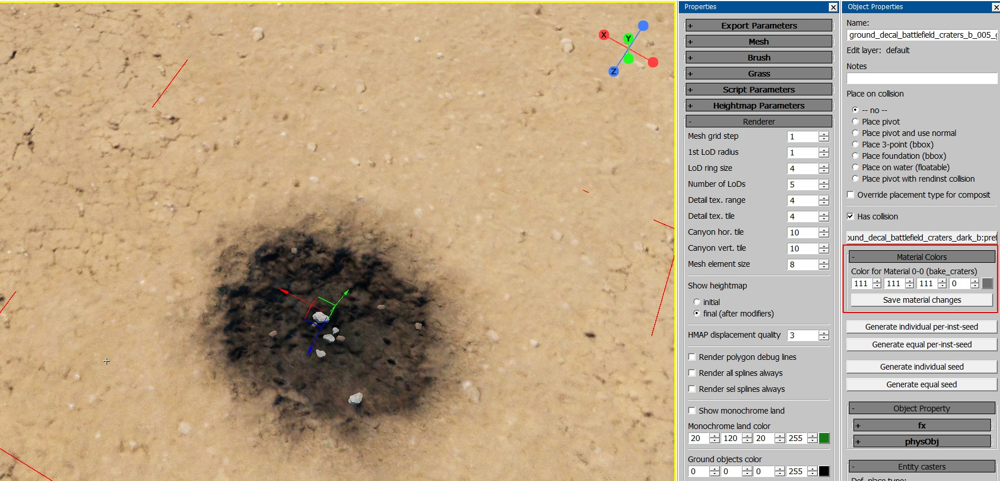

Shader: land_mesh_height_decal
Overview
This shader is used for rendering decals in clipmaps on prefabs or loft geometries.
Important
For WarThunder-based projects, only the following parameters are supported:
alpha_threshold, height_above, and vertex_gamma.
Parameters
height_above=1– Controls whether the decal is convex or concave.1: The heightmap is interpreted as convex and is rendered above thediffuse_threshold.0: The heightmap is interpreted as concave and is rendered below thediffuse_threshold.
diffuse_threshold=0.5– Determines the diffuse value at which the decal is fully rendered. A smooth transition is drawn up to this value, blending with the underlying surface.hmap_softness=1– Configures the contrast of the resulting alpha for height displacement.norm_softness=1– Configures the contrast of the resulting alpha for normal mapping.r_softness=1– Configures the contrast of the resulting alpha for reflectance, microdetails, smoothness, and occlusion.vertex_gamma=1– Configures the gamma for vertex alpha.attenuation_from_heightmap_height=0.7– Modulates the decal mask based on the decal’s height above the heightmap surface.0: Disabled.1: Renders what is 1 meter above the landscape.-1: Renders what is 1 meter below the landscape.
height_scale=0.15– Sets the height of the displacement.height_offset=-0.1– Offsets the height of the displacement.grass_decal_id=255– Controls the grass index mask:255: Removes grass.0: Keeps the grass as it was under the decal.Other values: Specific indices where grass is rendered.
script:t="vertex_opacity=1"– To use vertex alpha in decals created from prefabs, write the vertex alpha into the second vertex channel. This ensures the vertex alpha is read from the object.
color_mul_add=255,255,255,0– Colors the diffuse of the decals. In daEditor, there is a UI with a color picker that allows saving.mat.blkand.dagfiles (available only in War Thunder).
{kind=link}